Fur Lena – mogen deine
Abenteuer niemals enden.
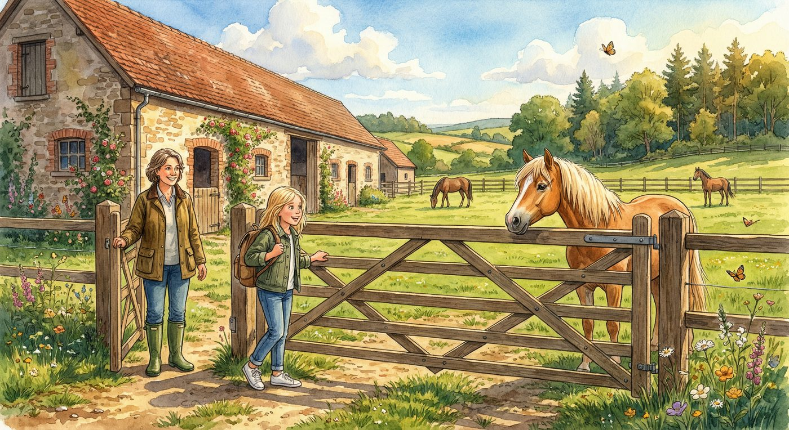
Der Geruch traf Lena, noch bevor sie das Tor erreichte. Heu, warmes Holz, und darunter etwas Erdiges, Lebendiges – der Duft von Pferden. Sie schloss die Augen und atmete tief ein.
„Na, kommst du noch oder willst du hier Wurzeln schlagen?“ Tante Marie stand am offenen Tor und lachte. Sie trug Gummistiefel, eine abgewetzte Wachsjacke und hatte einen Strohhalm im Haar. Sie sah genau so aus, wie Lena sie in Erinnerung hatte – nur die Lachfalten um ihre Augen waren tiefer geworden.
„Tante Marie!“ Lena rannte los und warf sich in die Arme ihrer Tante.
„Zwei Wochen, Lena-Maus. Zwei ganze Wochen nur du, ich und die Pferde.“ Tante Marie zwinkerte. „Und ein bisschen Arbeit. Auf einem Ponyhof gibt es immer was zu tun.“
Lena nickte eifrig. Arbeit auf dem Hof – das war kein bisschen wie Arbeit. Das war das Beste, was es gab.
Hof Sonnenweide lag am Rand eines kleinen Dorfes, eingebettet zwischen Wiesen und einem alten Mischwald. Der Hof war nicht groß, aber er war besonders. Das wusste jeder, der ihn einmal besucht hatte. Die Gebaude waren alt, manche uber hundert Jahre, mit dicken Steinmauern und Holzbalken, in die jemand vor langer Zeit Blumen und Ranken geschnitzt hatte. Im Fruhling wuchsen echte Kletterrosen an den Stallwanden hoch, und im Sommer summten die Bienen so laut, dass man sie noch auf der Koppel horen konnte.
Tante Marie fuhrte Lena uber den Hof. „Ich zeig dir erst mal, wer alles hier wohnt. Es hat sich einiges verandert seit letztem Jahr.“
Der Stall war lang und niedrig, mit sieben Boxen auf jeder Seite. Warmes Licht fiel durch die kleinen Fenster, und Staubkorner tanzten in den Sonnenstrahlen.
„Das hier“, sagte Tante Marie und blieb vor der ersten Box stehen, „ist Butterblume. Die kennst du ja.“
Ein goldener Haflinger mit einer hellen, fast weißen Mahne hob den Kopf und schnaubte leise. Butterblume war rund und gemutlich und hatte die sanftesten Augen, die Lena je bei einem Pferd gesehen hatte.
„Hey, Butterblume“, flusterte Lena und streckte die Hand aus. Das Pferd stupste seine weiche Nase gegen Lenas Handflache. „Du bist ja immer noch die Schonste.“
„Ubertreib es nicht, sonst wird Nordlicht eifersuchtig.“ Tante Marie deutete auf die Box gegenuber. Dort stand eine elegante graue Stute, die Lena mit hocherhobenem Kopf musterte, als wurde sie uber einen unsichtbaren Laufsteg schreiten. Ihr Fell schimmerte wie Silber.
„Das ist Nordlicht. Neu seit Oktober. Sie war mal ein Turnierpferd und benimmt sich auch so.“ Tante Marie senkte die Stimme. „Sehr von sich uberzeugt, aber ein Herz aus Gold, wenn man es erst mal gefunden hat.“
Sie gingen weiter. In der nachsten Box tobte ein braun-weiß geschecktes Pony herum und zerrte an einem Heunetz.
„Flecki! Lass das!“ Tante Marie schuttelte den Kopf. „Das ist unser Jungster. Zwei Jahre alt und benimmt sich wie ein Wirbelwind mit Hufen.“
Flecki spitzte die Ohren, galoppierte zur Boxentur und versuchte, an Lenas Jacke zu knabbern. Lena lachte.
„Dann haben wir noch Kupfer – den Schlauen.“ Ein rotbrauner Wallach mit klugen Augen stand ruhig in seiner Box und schien Lena aufmerksam zu beobachten. „Kupfer findet jeden Weg. Wenn du dich im Wald verirrst, lass einfach die Zugel locker. Er bringt dich immer nach Hause.“
„Und Sternchen.“ Ein kleines, dunkelbraunes Pony druckte sich an die hintere Wand seiner Box. Auf seiner Stirn leuchtete ein weißer Stern. „Sternchen ist schuchtern. Aber wenn es darauf ankommt, ist sie tapferer als alle anderen zusammen.“
Lena blieb stehen. „Du hast noch zwei vergessen.“
Tante Marie lachelte. „Stimmt. Sturmwind steht draußen auf der Koppel. Den musst du dir selbst ansehen.“
„Und der siebte?“
Tante Maries Lacheln wurde nachdenklich. „Mondschimmer. Der steht ganz hinten, in der letzten Box. Mondschimmer ist … besonders.“
Etwas in Tante Maries Stimme ließ Lena aufhorchen. Aber bevor sie fragen konnte, zog ihre Tante sie schon weiter.
Draußen auf der Koppel stand ein Pferd, das so kastanienbraun war, dass sein Fell im Sonnenlicht kupfern schimmerte. Es galoppierte uber die Wiese, die dunkle Mahne wehte wie ein Banner, und seine Hufe donnerten uber den Boden.
„Das ist Sturmwind“, sagte Tante Marie.
Lena vergaß zu atmen. Sturmwind war das schonste Pferd, das sie je gesehen hatte. Nicht hubsch wie Nordlicht oder gemutlich-schon wie Butterblume. Sturmwind war wild-schon. Wie ein Gewitter am Horizont. Wie eine Welle, kurz bevor sie bricht.
„Er ist ein Brauner. Acht Jahre alt. Temperamentvoll, manchmal stur, aber wenn er dir vertraut, geht er mit dir durch Feuer.“ Tante Marie lehnte sich an den Zaun. „Allerdings vertraut er nicht jedem.“
Sturmwind hatte sie bemerkt. Er verlangsamte seinen Galopp, trabte ein paar Schritte und blieb dann stehen. Seine dunklen Augen richteten sich auf Lena.
Lena hob langsam die Hand. „Hey“, sagte sie leise.
Sturmwind schnaubte. Einmal, zweimal. Dann, ganz langsam, kam er naher. Schritt fur Schritt. Bis seine Nase Lenas ausgestreckte Finger beruhrte.
„Na sowas“, murmelte Tante Marie. „Das hat er bei niemandem gemacht, seit er hier ist.“
Lenas Herz klopfte so laut, dass sie sicher war, die Pferde auf der Nachbarkoppel konnten es horen.
Spater, als Lena ihren Rucksack in das kleine Gastezimmer unter dem Dach trug, fiel ihr Blick aus dem Fenster. Von hier oben konnte sie den ganzen Hof uberblicken: den Stall, die Koppel, den Reitplatz mit dem Sandboden, und dahinter den Waldrand, wo die Baume dunkel und dicht standen.
Und ganz am Ende des Stalls, durch ein kleines Fenster, sah sie etwas Seltsames. Ein schwaches, silbriges Leuchten. Es flackerte kurz auf, wie Mondlicht auf Wasser – und erlosch.
Lena blinzelte. Hatte sie sich das eingebildet?
Sie schuttelte den Kopf. Es war heller Tag. Wahrscheinlich nur eine Spiegelung.
Aber als sie sich von dem Fenster abwandte, kribbelte es in ihrem Bauch. Dieses Gefuhl kannte sie. Es war das Gefuhl, das sie immer bekam, wenn ein Abenteuer begann.
Sie wusste es nur noch nicht.
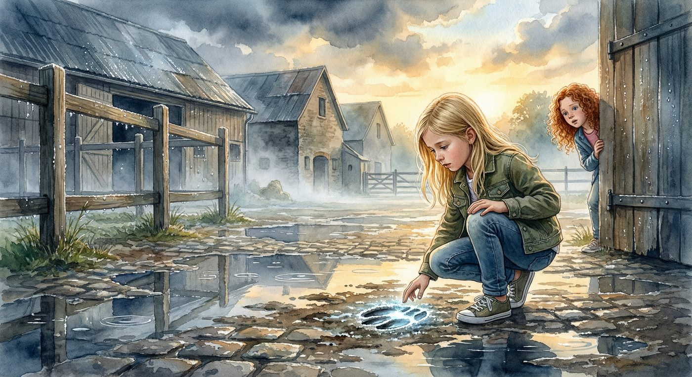
In der Nacht kam der Regen.
Lena lag in ihrem Bett unter dem Dach und horte, wie die Tropfen auf die Ziegel prasselten. Es war kein sanfter Regen. Es war ein richtiger Sommerregen – der Himmel riss auf, und das Wasser fiel in Stromen. Der Wind druckte gegen die alten Fenster, und irgendwo klapperte ein Laden.
Lena zog die Decke hoher und lauschte. Zwischen den Regenstossen horte sie die Pferde. Ein leises Wiehern, ein Stampfen. Und dann – ganz kurz – etwas anderes. Ein Gerausch, das nicht zum Regen gehorte. Ein metallisches Klingen, wie ein Glockchen, das jemand angeschlagen hatte. Einmal. Dann war es still.
Das war nichts, dachte Lena. Nur der Regen.
Aber ihr Herz klopfte trotzdem ein bisschen schneller, als sie die Augen schloss.
Am nachsten Morgen war die Welt verwandelt. Lena offnete das Fenster und kalte, frische Luft stromte herein. Alles glanzte. Die Koppelzaune, die Dacher, die Blatter an den Baumen – alles war nass und funkelte in der Morgensonne, als hatte jemand den ganzen Hof mit Diamanten bestreut.
Lena zog sich an und rannte nach unten. Tante Marie stand schon in der Kuche und machte Kakao.
„Gut geschlafen?“
„Es hat so laut geregnet!“ Lena setzte sich an den alten Holztisch. „Und ich hab ein komisches Gerausch gehort. So ein Klingen.“
Tante Marie hielt kurz inne. Nur einen Moment, kaum merklich. Dann lachelte sie. „Wahrscheinlich die alte Wetterfahne auf dem Stall. Die klappert bei Wind.“
Lena nickte. Aber sie hatte gesehen, wie Tante Marie kurz gezogert hatte. Das war merkwurdig.
Nach dem Fruhstuck lief Lena zum Stall. Die Pferde waren schon wach. Butterblume mampfte Heu, Flecki hing mit dem Kopf uber der Boxentur und schnappte nach vorbeifliegenden Fliegen, und Kupfer stand wie immer ruhig da und beobachtete alles.
Lena ging durch den Gang, verteilte Streicheleinheiten und blieb dann vor der letzten Box stehen.
Mondschimmer.
Das Pferd war silberweiß. Nicht grau wie Nordlicht, sondern wirklich silbern. Sein Fell hatte einen seltsamen Schimmer, als wurde Licht unter der Oberflache leuchten. Mondschimmer war alt – wie alt, hatte Tante Marie nicht genau gesagt. Seine Augen waren dunkel und tief und unglaublich ruhig.
„Hallo, Mondschimmer“, flusterte Lena.
Das Pferd drehte den Kopf und sah sie an. Lena hatte das Gefuhl, dass Mondschimmer sie nicht nur ansah, sondern erkannte. Als hatte er auf sie gewartet.
„Den reitet keiner mehr.“ Eine Stimme hinter ihr. Lena drehte sich um.
Ein Junge stand im Stalleingang. Er war großer als sie, vielleicht zehn, mit strubbeligem braunem Haar und Sommersprossen. Er trug dreckige Stiefel und eine zu große Jacke.
„Wer bist du?“, fragte Lena.
„Finn. Ich wohn nebenan.“ Er deutete vage uber seine Schulter. „Und du bist Maries Nichte, oder?“
„Lena.“
Finn musterte sie, als wurde er abschatzen, ob sie der Muhe wert war. „Mondschimmer ist uralt. Der war schon hier, als meine Oma noch ein Kind war. Sagt jedenfalls mein Großvater. Keiner weiß genau, wie alt er ist.“
„Das kann nicht stimmen. Pferde werden nicht so alt.“
Finn zuckte die Schultern. „Sag das Mondschimmer.“
Bevor Lena antworten konnte, knallte draußen eine Tur. Tante Marie rief etwas, und Finn verschwand so schnell, wie er aufgetaucht war.
Lena half am Vormittag beim Ausmisten und Futtern. Mia, ihre Freundin vom letzten Sommer, kam gegen zehn Uhr auf dem Fahrrad angeschossen, warf es gegen den Zaun und rannte auf Lena zu.
„LENA! Du bist da!“ Mia war einen halben Kopf kleiner als Lena, hatte lockige rote Haare und ein Lachen, das man drei Koppeln weit horen konnte.
„Mia!“ Sie umarmten sich.
„Komm, wir reiten nachher aus! Tante Marie hat gesagt, wir durfen auf die Waldkoppel, wenn wir vorher die Boxen fertig machen.“
Lena grinste. Das klang nach dem perfekten Tag.
Aber zuerst passierte etwas, das alles veranderte.
Es war kurz vor Mittag. Lena brachte eine Schubkarre mit Mist zum Kompost hinter dem Stall. Der Weg fuhrte am Seiteneingang vorbei, dort, wo der Hof an die alte Koppel grenzte. Und dort, im nassen Boden, sah sie die Spur.
Eine einzelne Hufspur. Aber sie war anders.
Lena stellte die Schubkarre ab und kniete sich hin.
Die Spur war tief in den weichen Boden gedruckt, wie jede andere Hufspur. Aber sie schimmerte. Silbrig. Als ware das Eisen, das sie hinterlassen hatte, nicht aus normalem Metall, sondern aus etwas anderem. Etwas, das das Licht auffing und festhielt.
Lena beruhrte den Rand der Spur mit dem Finger. Der Schimmer blieb. Er war nicht nass, nicht klebrig – er war einfach da.
Sie stand auf und sah sich um. Und dann bemerkte sie, dass es nicht nur eine Spur war.
Es waren viele. Eine ganze Linie von silbrig schimmernden Hufspuren, die vom Stall wegfuhrten, uber den nassen Boden, am Zaun entlang und dann – hinunter zum Waldpfad.
„Was ist denn das?“, flusterte Lena.
„LENA! Essen!“ Tante Maries Stimme riss sie aus ihren Gedanken.
Lena stand auf. Sie wollte schon losrennen, aber dann drehte sie sich noch einmal um und pragte sich die Richtung ein, in die die Spuren fuhrten.
Zum Wald. Die silbernen Hufspuren fuhrten zum Wald.
Und plotzlich wusste Lena: Das war der Anfang von etwas. Sie wusste nicht, von was. Aber das Kribbeln in ihrem Bauch sagte ihr, dass dieses Abenteuer großer war als alles, was sie sich hatte ausdenken konnen.
Beim Mittagessen versuchte sie, ruhig zu bleiben. Aber als Tante Marie kurz aus der Kuche ging, beugte sich Lena zu Mia.
„Ich hab was gefunden. Draußen beim Stall. Silberne Hufspuren.“
Mia sah sie an, als hatte Lena gesagt, sie hatte ein Einhorn gesehen. „Silberne was?“
„Hufspuren. Die glitzern richtig. Komm nachher mit, ich zeig sie dir.“
Mia kaute langsam auf ihrem Brot. Dann grinste sie. „Okay. Aber wenn das ein Witz ist, musst du eine Woche lang Fleckis Box alleine ausmisten.“
„Deal.“
Aber es war kein Witz. Und als die beiden Madchen nach dem Essen zu der Stelle liefen, waren die Spuren immer noch da. Silbrig schimmernd. Geheimnisvoll. Und sie fuhrten immer noch zum Wald.
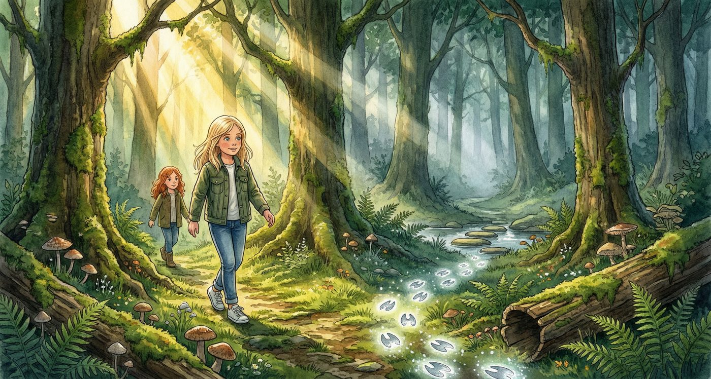
„Das ist echt.“ Mia kniete neben der Spur und stupste sie an. „Die glitzern wirklich. Was ist das?“
„Keine Ahnung.“ Lena folgte der Spurlinie mit den Augen. „Aber ich will wissen, wohin sie fuhren.“
„Jetzt?“
„Jetzt.“
Mia sah zum Waldrand. Die Baume standen dicht, und im Schatten zwischen den Stammen lag noch der Dunst vom Morgenregen. „Tante Marie hat gesagt, wir sollen auf der Waldkoppel bleiben. Der tiefe Wald ist was anderes.“
„Wir gehen nur ein Stuck rein. Nur bis wir sehen, wo die Spuren hinfuhren.“
Mia biss sich auf die Lippe. Dann nickte sie. „Okay. Aber wenn da ein Wolf ist, renne ich schneller als du.“
„Es gibt hier keine Wolfe, Mia.“
„Sagt man.“
Sie folgten den Spuren. Der Waldpfad war schmal und holprig, voller Wurzeln und nasser Blatter. Die Hufabdrucke waren hier schwerer zu erkennen – der Waldboden war weicher, dunkler –, aber der silbrige Schimmer leuchtete zwischen dem Laub wie kleine Wegweiser.
„Wer auch immer das war, der ist hier langgeritten“, sagte Lena. „Mitten in der Nacht. Im Regen.“
„Aber welches Pferd hat silberne Hufe?“
Lena dachte an Mondschimmer. An sein seltsames, silbriges Fell. An die Art, wie er sie angesehen hatte.
Nein, dachte sie. Das ist verruckt. Mondschimmer ist alt. Den reitet keiner mehr.
Trotzdem.
Der Pfad fuhrte abwarts, und bald horten sie das Wasser. Der Bach – Tante Marie nannte ihn den „Murmelbach“ – schlangelte sich zwischen moosbedeckten Steinen hindurch. Normalerweise war er flach genug, um durchzuwaten. Aber nach dem Regen war er angeschwollen, und das Wasser schoss schneller uber die Steine als sonst.
Die Hufspuren fuhrten genau zum Bach. Und auf der anderen Seite – Lena reckte den Hals – konnte sie sehen, dass sie dort weitergingen.
„Wir mussen ruber“, sagte Lena.
„Da sind Trittsteine.“ Mia deutete auf eine Reihe flacher Steine, die quer durch den Bach lagen. Einige ragten kaum noch aus dem Wasser.
Lena ging voran. Der erste Stein war nass und rutschig. Sie balancierte, streckte den Fuß zum nachsten. Das Wasser rauschte unter ihr. Noch ein Stein. Noch einer.
„Vorsicht!“, rief Mia.
Lena schwankte, fing sich, machte einen letzten großen Schritt – und stand auf der anderen Seite. Ihr Herz hammerte. Sie drehte sich um und streckte Mia die Hand hin.
„Komm. Ich halt dich fest.“
Mia kam ruber, wobei sie leise Worter murmelte, die wahrscheinlich nicht fur Erwachsenenohren bestimmt waren.
Auf der anderen Seite des Bachs wurde der Wald dichter. Aber die Spuren waren jetzt deutlicher – hier war der Boden lehmig, und die Hufabdrucke waren tief und klar. Der silbrige Schimmer war starker, fast so, als hatte jemand mit Glitzerfarbe die Rander der Abdrucke nachgezogen.
Und dann blieb Lena abrupt stehen.
Vor ihnen lag eine Lichtung. Kein großer Platz, eher ein Kreis aus Licht zwischen den Baumen, wo das Sonnenlicht ungehindert auf den Boden fiel. Gras wuchs hier, und Wildblumen – gelb, weiß, lila. Es war still. Kein Vogelgezwitscher, kein Rascheln. Nur das ferne Murmeln des Bachs.
In der Mitte der Lichtung stand ein Stein.
Nicht irgendein Stein. Ein großer, flacher Stein, fast wie ein Tisch, mit einer glatten Oberflache, die im Sonnenlicht schimmerte. Und auf der Oberflache war etwas eingraviert.
Lena ging naher. Mia folgte ihr zogernd.
Die Gravur war alt. Moos hatte sich in die Rillen gesetzt, und manche Linien waren verwittert. Aber man konnte es noch erkennen: Ein Hufeisen. Und darunter ein Symbol – eine Sonne uber einer Weide. Und darunter Buchstaben.
„S…W…“ Lena fuhr mit dem Finger uber die Gravur. „Sonnenweide! Das ist das Zeichen vom Hof!“
„Was macht das hier mitten im Wald?“, fragte Mia.
„Keine Ahnung. Aber guck mal – hier sind noch mehr Zeichen.“ Unter dem Hofzeichen waren kleinere Buchstaben eingraviert. Lena wischte das Moos weg und versuchte zu lesen.
Wo der Mond auf Silber trifft,
wo die alte Eiche steht,
dort bewahrt das Herz des Hofs
was kein Sturm verweht.
„Das ist ein Ratsel“, flusterte Lena. „Ein echtes Ratsel.“
„Oder ein Gedicht von jemandem, der zu viel Zeit hatte“, sagte Mia. Aber ihre Augen waren groß, und Lena konnte sehen, dass sie genauso aufgeregt war.
Lena zog ihr Handy aus der Tasche und fotografierte die Inschrift. Dann sah sie sich auf der Lichtung um. Die Hufspuren – die silbrigen Hufspuren – endeten hier. Genau an diesem Stein. Als hatte das Pferd hier angehalten.
Oder als wollte jemand, dass sie diesen Stein fand.
„Wir mussen zuruck“, sagte Mia und sah auf ihre Uhr. „Tante Marie macht sich Sorgen.“
Lena nickte. Aber bevor sie ging, legte sie die Hand auf den warmen Stein. Wo der Mond auf Silber trifft, dachte sie. Was bedeutet das?
Auf dem Ruckweg sprachen sie kaum. Jede hing ihren Gedanken nach. Als sie den Bach uberquerten – diesmal sicherer, weil sie die rutschigen Steine schon kannten –, packte Mia plotzlich Lenas Arm.
„Da ist jemand.“
Lena erstarrte. Am Waldrand, halb verdeckt von einem Busch, stand ein Mann. Er war groß, trug einen dunklen Mantel und einen Hut, und er starrte auf den Boden. Genau auf die Stelle, wo die silbrigen Hufspuren begannen.
„Wer ist das?“, flusterte Lena.
„Das ist Herr Brinkmann“, flusterte Mia zuruck. „Der Nachbar. Der ist immer schlecht gelaunt. Papa sagt, er will das Land vom Hof kaufen.“
Herr Brinkmann buckte sich und beruhrte eine der Hufspuren. Dann richtete er sich auf und sah zum Wald. Genau in die Richtung, aus der Lena und Mia gerade kamen.
Die Madchen duckten sich hinter einen Busch.
„Hat er uns gesehen?“, hauchte Mia.
Lena spahte durch die Blatter. Herr Brinkmann drehte sich um und ging mit schnellen Schritten davon. Sein Gesicht war verschlossen, aber Lena hatte etwas darin gesehen. Nicht Arger. Etwas anderes.
Er weiß etwas, dachte sie. Er weiß, was die Spuren bedeuten.
Und in diesem Moment beschloss Lena, dass sie das Geheimnis der silbernen Hufspur losen wurde. Koste es, was es wolle.
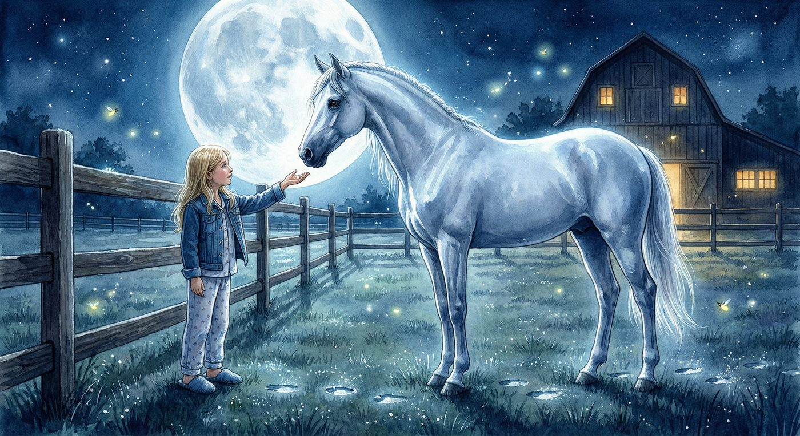
Den Rest des Nachmittags verbrachte Lena auf der Koppel. Sie striegelte Butterblume, ubte das Aufsteigen bei Kupfer und versuchte, nicht an die silbernen Hufspuren zu denken.
Es gelang ihr nicht besonders gut.
Beim Abendessen saß sie mit Tante Marie in der gemutlichen Kuche. Draußen wurde es langsam dunkel, und die Grillen begannen zu zirpen.
„Tante Marie?“
„Hmm?“ Ihre Tante strich Butter auf ein Stuck Brot.
„Wie lange gibt es Hof Sonnenweide schon?“
Tante Marie sah auf. „Lange. Mein Urgroßvater hat ihn gegrundet. August Sonnberg hieß er. Das war … oh, vor uber hundert Jahren. Warum fragst du?“
„Nur so. Und Mondschimmer? Wie alt ist der wirklich?“
Tante Marie legte das Messer hin. Sie sah Lena an, und in ihren Augen lag etwas, das Lena nicht einordnen konnte. Warme, aber auch etwas Vorsichtiges. Als uberlegte sie, wie viel sie sagen sollte.
„Mondschimmer ist … ein besonderes Pferd, Lena. Er war schon hier, als ich den Hof ubernommen habe. Und er war schon alt, als ich ein Kind war. Meine Mutter sagte immer, Mondschimmer gehore zum Hof wie die Mauern und die Steine. Er sei ein Teil von Sonnenweide selbst.“
„Aber wie alt ist er?“
Tante Marie lachelte. Es war ein geheimnisvolles Lacheln. „Alter, als er sein durfte. Das ist alles, was ich dir sagen kann. Manche Dinge auf diesem Hof sind nicht so einfach zu erklaren, Lena. Manche Dinge muss man selbst herausfinden.“
Lena lag in ihrem Bett und konnte nicht schlafen. Die Worte des Ratsels drehten sich in ihrem Kopf.
Wo der Mond auf Silber trifft, wo die alte Eiche steht …
Mond. Silber. Mondschimmer.
Lena setzte sich auf. Ihr Herz schlug schneller. Was, wenn „Mond auf Silber“ kein Ort war, sondern ein Pferd? Mondschimmer – Mond und Silber. Und „die alte Eiche“ – gab es auf dem Hof eine alte Eiche?
Sie musste es herausfinden. Aber nicht jetzt. Nicht mitten in der Nacht.
Oder doch?
Lena stand am Fenster und sah hinaus. Der Mond war fast voll und tauchte den Hof in blasses Licht. Die Koppel sah aus wie ein Silbersee. Und dort, am Rand der Koppel, stand eine Gestalt.
Ein Pferd.
Silberweiß im Mondlicht, reglos, wie eine Statue. Mondschimmer stand draußen auf der Koppel und sah zum Wald.
Aber Mondschimmer war in seiner Box gewesen. Lena hatte ihn vor dem Schlafengehen noch gesehen. Die Boxentur war zu gewesen.
Wie ist er rausgekommen?
Lena griff nach ihrer Jacke.
Sie schlich die Treppe hinunter, vorbei an Tante Maries Schlafzimmer, durch die Hintertur in die kuhle Nachtluft. Das Gras war nass unter ihren Fußen. Irgendwo rief ein Kauzchen.
Mondschimmer stand immer noch da. Er hatte sich nicht bewegt. Aber als Lena naher kam, drehte er den Kopf und sah sie an.
Und dann tat er etwas Seltsames.
Er ging los. Langsam, Schritt fur Schritt, den Zaun entlang. Und nach ein paar Metern blieb er stehen und sah zuruck zu Lena. Als wurde er warten. Als wollte er sagen: Kommst du mit?
„Willst du mir was zeigen?“, flusterte Lena.
Mondschimmer schnaubte leise und ging weiter. Lena folgte ihm. Der Zaun fuhrte am Reitplatz vorbei, an der alten Scheune, die seit Jahren leer stand, und dann zu einem Teil des Hofgelandes, den Lena noch nie besucht hatte. Hier war es verwildert – hohes Gras, Brennnesseln, umgesturzte Holzlatten.
Mondschimmer blieb stehen. Vor ihm, im silbernen Mondlicht, stand ein Baum. Eine Eiche. Riesig, knorrig, mit Asten so dick wie Lenas Korper. Ihr Stamm war so breit, dass drei Kinder ihn nicht hatten umfassen konnen.
Wo die alte Eiche steht.
„Das ist sie“, hauchte Lena. „Die alte Eiche aus dem Ratsel.“
Mondschimmer stupste mit der Nase gegen den Stamm. Genau an einer Stelle, wo die Rinde eine seltsame Form hatte – ein Oval, glatter als der Rest, fast wie ein Fenster im Holz. Und in diesem Oval, halb verborgen unter Moos und Flechten, war eine Markierung.
Ein Hufeisen. Und darunter ein Pfeil, der nach unten zeigte.
Nach unten. Lena kniete sich hin. Am Fuß der Eiche, zwischen den machtigen Wurzeln, war die Erde locker. Als hatte jemand hier gegraben. Oder als wollte jemand, dass hier gegraben wird.
Lena kratzte mit den Fingern an der Erde. Sie war weich und feucht vom Regen. Und nach ein paar Zentimetern stieß sie auf etwas Hartes.
Etwas Metallisches.
„Lena!“
Die Stimme schnitt durch die Stille. Lena fuhr zusammen. Tante Marie stand hinter ihr, eine Taschenlampe in der Hand, den Bademantel uber dem Schlafanzug.
„Was machst du hier draußen? Es ist mitten in der Nacht!“
„Tante Marie, ich – Mondschimmer hat mich hergefuhrt. Und guck mal, hier unter der Eiche ist etwas –“
„Lena.“ Tante Maries Stimme war jetzt anders. Nicht bose, aber ernst. „Es ist fast Mitternacht. Du kannst nicht alleine im Dunkeln auf dem Hof herumstreifen.“
„Aber die Eiche – das Ratsel –“
Tante Marie sah sie lange an. Dann sah sie zu Mondschimmer, der ruhig neben der Eiche stand und so unschuldig aussah, wie ein silberweißes Geisterpferd mitten in der Nacht nur aussehen konnte.
„Morgen“, sagte Tante Marie leise. „Wir reden morgen daruber. Und jetzt gehst du ins Bett.“
Lena wollte protestieren. Aber etwas in Tante Maries Gesicht sagte ihr, dass das keine gute Idee war. Also nickte sie.
Aber als sie zum Haus zuruckging und sich ein letztes Mal umdrehte, sah sie, dass Mondschimmer immer noch bei der Eiche stand. Und im Mondlicht glaubte sie zu sehen, dass seine Hufe auf dem nassen Boden silbrige Abdrucke hinterließen.
Morgen, dachte Lena. Morgen komme ich zuruck.
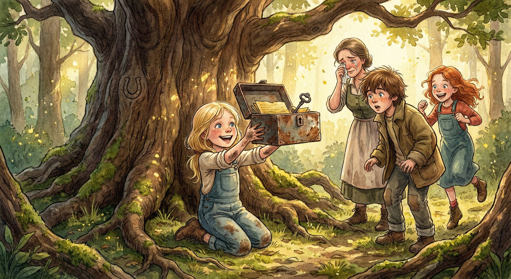
Am nachsten Morgen war Lena schon wach, als die ersten Vogel anfingen zu singen. Sie zog sich an, rannte in die Kuche – und fand Tante Marie schon am Tisch sitzen. Mit zwei Tassen Kakao.
„Setz dich“, sagte ihre Tante.
Lena setzte sich. Tante Marie schob ihr eine Tasse hin und sagte lange nichts. Draußen krahte ein Hahn.
„Du hast die silbernen Hufspuren gefunden“, sagte Tante Marie schließlich. Es war keine Frage.
Lena nickte.
„Und den Stein im Wald. Mit dem Ratsel.“
Lenas Augen wurden groß. „Du weißt davon?“
Tante Marie lachelte, aber es war ein trauriges Lacheln. „Lena, ich bin auf diesem Hof aufgewachsen. Naturlich kenne ich den Stein. Und ich kenne das Ratsel. Meine Mutter hat es mir gezeigt, als ich so alt war wie du.“
„Aber warum hast du nichts gesagt?“
Tante Marie umschloss ihre Tasse mit beiden Handen. „Weil ich es nie losen konnte. Ich habe es versucht, jahrelang. Ich habe unter der Eiche gegraben, ich habe den ganzen Wald abgesucht. Aber ich habe nie gefunden, was das Ratsel verspricht.“
„Was verspricht es denn?“
„Das Herz des Hofs. Meine Mutter sagte, der Grunder von Sonnenweide – mein Urgroßvater August – hatte etwas Wichtiges versteckt. Etwas, das den Hof beschutzt. Aber niemand hat es je gefunden.“
Lena dachte an das Metallische, das sie in der Nacht unter der Eiche ertastet hatte. „Ich glaube, ich habe etwas gefunden. Gestern Nacht. Unter der Eiche.“
Eine halbe Stunde spater standen Lena, Tante Marie, Mia und – zu Lenas Uberraschung – Finn um die alte Eiche herum. Finn war „zufallig“ vorbeigekommen, was wahrscheinlich bedeutete, dass er sie vom Zaun aus beobachtet hatte.
Lena kniete sich hin und grub an der Stelle, die sie in der Nacht gefunden hatte. Die Erde war noch feucht. Und nach wenigen Minuten stieß sie wieder auf das Metallische.
Es war eine Dose. Eine alte, rostige Blechdose, nicht großer als ein Buch. Lena zog sie vorsichtig aus der Erde.
„Mach auf“, flusterte Mia.
Lena wischte die Erde ab. Der Deckel klemmte. Finn reichte ihr sein Taschenmesser, und nach ein bisschen Hebeln ging er auf.
In der Dose lag ein Bundel. Altes, vergilbtes Papier, zusammengerollt und mit einem Lederband umwickelt. Und darunter ein Schlussel. Ein schwerer, alter Schlussel aus dunklem Metall, mit einem kunstvoll geschmiedeten Griff in der Form eines – Hufeisens.
„Oh mein Gott“, sagte Tante Marie leise. Sie nahm das Papierbundel mit zitternden Handen und loste das Lederband.
Es waren Briefe. Alte, handgeschriebene Briefe in verblasster Tinte. Und ganz oben lag ein Blatt, das anders war als die anderen – steiferes Papier, sorgfaltigere Schrift.
Tante Marie las vor, langsam und vorsichtig, weil die Tinte an manchen Stellen kaum noch zu erkennen war:
„An den, der die Spur findet – Ich, August Sonnberg, Grunder des Hofs Sonnenweide, hinterlasse dies als Vermachtnis. Der Hof ist mehr als Land und Stein. Sein Herz liegt dort, wo das Licht den Schatten trifft, in der alten Scheune, hinter der Wand, die nicht ist, was sie scheint. Der Schlussel offnet, was bewahrt werden muss. Bewahre es gut. Denn solange das Herz schlagt, lebt Sonnenweide. August Sonnberg, im Jahre 1921.“
Stille. Sogar Finn hatte den Mund offen.
„Die alte Scheune“, sagte Lena. „Da mussen wir hin.“
Tante Marie faltete den Brief zusammen und sah zu der verfallenen Scheune, die am Rand des Hofgelandes stand, halb verborgen hinter Holunderbuschen. „Diese Scheune steht leer, seit ich denken kann. Die Tur ist verriegelt und ich habe nie einen Schlussel dafur gehabt.“
Sie alle sahen auf den Schlussel in Lenas Hand.
„Bis jetzt“, sagte Lena.
Die alte Scheune sah aus, als hatte die Zeit sie vergessen. Das Dach war teilweise eingesturzt, Efeu bedeckte die Wande, und das Holz der Tur war grau und rissig. Ein rostiges Schloss hing an einer schweren Kette.
Lena schob den Schlussel hinein. Er passte. Sie drehte ihn – einmal, zweimal – und das Schloss sprang auf. Die Kette fiel klirrend zu Boden.
Die Tur quietschte, als Lena sie aufzog. Drinnen war es dunkel und roch nach altem Holz und trockenem Heu. Staubkorner wirbelten in den Lichtstrahlen, die durch die Ritzen im Dach fielen.
„Da ist nichts drin“, sagte Finn. „Nur alter Kram.“
„August hat geschrieben: hinter der Wand, die nicht ist, was sie scheint“, erinnerte Lena. Sie ging langsam durch die Scheune, klopfte gegen die Wande, druckte gegen Bretter.
Mia half. Finn tat so, als ware er nicht interessiert, und half trotzdem.
Tante Marie stand in der Tur und sah zu, die Hand auf dem Herzen.
„Hier!“ Mia druckte gegen ein Brett an der hinteren Wand, und es gab nach. Dahinter war Hohlraum. „Da ist was hinter der Wand!“
Lena und Finn zogen die losen Bretter zur Seite. Dahinter lag ein kleiner Raum – eher eine Nische, kaum großer als eine Abstellkammer. Und in dieser Nische stand eine alte Holztruhe.
Die Truhe hatte ein Schloss. Und dieses Schloss hatte die Form eines Hufeisens.
Lenas Hande zitterten, als sie den Schlussel einfuhrte.
Klick.
Der Deckel ging auf.
Und Lena sah, was August Sonnberg vor uber hundert Jahren versteckt hatte.
In der Truhe lagen Dokumente. Dicke, schwere Papiere mit Siegeln und Stempeln. Ein altes Buch – ein Tagebuch, wie sich herausstellte, in August Sonnbergs Handschrift. Und darunter, eingewickelt in Samt, eine Karte. Eine handgemalte Karte des Hofes und des umliegenden Landes, auf der jeder Grenzstein, jeder Weg, jeder Bach eingezeichnet war.
Und am Rand der Karte, in großen Buchstaben: Grundbesitzurkunde – Sonnenweide – eingetragen 1898 – Besitz der Familie Sonnberg auf ewig und unwiderruflich.
Tante Marie setzte sich auf eine Holzkiste und weinte.
Nicht vor Trauer. Vor Erleichterung.
„Tante Marie?“ Lena legte ihr den Arm um die Schulter. „Was ist los?“
„Lena … du weißt nicht, was du gerade gefunden hast.“ Tante Marie wischte sich die Augen. „Herr Brinkmann … er behauptet seit Monaten, dass ein Teil unseres Landes eigentlich ihm gehort. Dass die alten Grenzen falsch eingetragen sind. Er will klagen. Und ohne die Originaldokumente konnte ich nicht beweisen, dass der Hof uns gehort.“ Sie deutete auf die Papiere. „Das hier ist der Beweis. Die Originalurkunde. Die alteste Karte. Das Tagebuch des Grunders.“
„Also ist der Hof sicher?“, fragte Mia.
Tante Marie lachelte durch ihre Tranen. „Der Hof ist sicher.“
Aber Lena spurte, dass die Geschichte hier nicht zu Ende war. In der Truhe lag noch etwas. Unter den Dokumenten, ganz auf dem Boden, lag ein einzelnes Blatt. Darauf stand, in August Sonnbergs verschnorkelter Schrift, ein weiteres Ratsel. Und dieses Ratsel war anders als das erste.
Lena steckte es in ihre Jackentasche, ohne dass jemand es sah.
Das ist noch nicht alles, dachte sie. Es gibt noch ein Geheimnis.
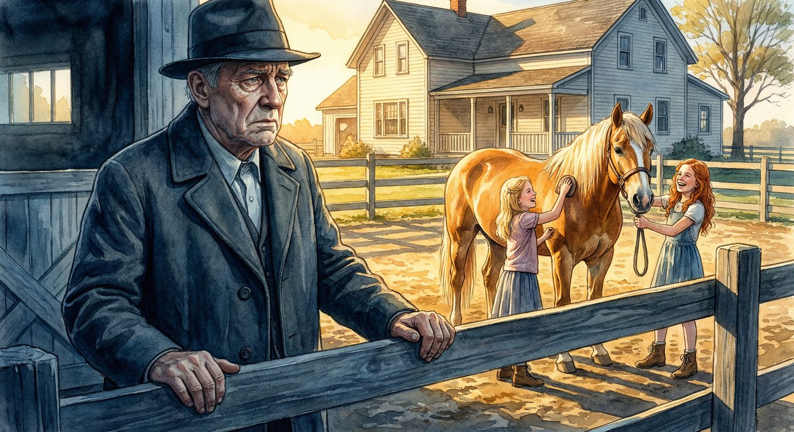
Am nachsten Tag kam Herr Brinkmann.
Lena sah ihn zuerst. Sie stand auf der Koppel und fuhrte Sternchen im Schritt, als ein dunkler Gelandewagen die Hofeinfahrt heraufkam. Er parkte neben dem Stall, und ein großer Mann stieg aus. Dunkler Mantel, Hut, Gesicht wie aus Stein gemeißelt.
Herr Brinkmann ging direkt zum Haus, ohne nach rechts oder links zu sehen. Lena horte, wie er an die Tur klopfte. Laut. Fordernd.
„Tante Marie?“ Lena band Sternchen am Zaun fest und schlich zum Haus.
Durch das offene Kuchenfenster konnte sie die Stimmen horen.
„Das Land ostlich des Bachs gehort seit Generationen meiner Familie, Marie. Und das wissen Sie.“ Herr Brinkmanns Stimme war tief und kalt.
„Da irren Sie sich, Heinrich.“ Tante Marie klang ruhig, aber fest. „Ich habe die Originalurkunde gefunden. Von 1898. Unterschrieben und besiegelt. Das Land gehort zu Sonnenweide.“
Stille. Dann: „Originalurkunde? Wo haben Sie die her?“
„Das spielt keine Rolle. Sie existiert, und sie ist rechtsgultig. Mein Anwalt pruft sie gerade.“
Wieder Stille. Dann Schritte. Die Tur ging auf, und Herr Brinkmann kam heraus. Er blieb auf der Schwelle stehen und sah direkt zu Lena.
Lena wich nicht zuruck. Sie sah ihm in die Augen.
Und das, was sie dort sah, uberraschte sie. Hinter der Kalte, hinter dem steinernen Gesicht, war etwas anderes. Etwas Trauriges. Etwas Verlorenes.
Herr Brinkmann setzte seinen Hut auf und ging zu seinem Auto. Bevor er einstieg, drehte er sich noch einmal um.
„Passen Sie auf, was Sie finden, Marie“, sagte er. „Manche Dinge sollten begraben bleiben.“
Er fuhr davon. Der Kies spritzte unter seinen Reifen.
„Was meint er damit?“, fragte Lena, als sie in die Kuche kam.
Tante Marie saß am Tisch, die Hande um eine kalte Tasse Tee. „Heinrich Brinkmann ist ein unglucklicher Mann, Lena. Sein Hof war fruher genauso groß wie Sonnenweide. Aber sein Vater hat schlecht gewirtschaftet, hat Land verkauft, Schulden gemacht. Heute ist von dem großen Brinkmann-Hof fast nichts mehr ubrig.“
„Und deshalb will er unser Land?“
„Er will zuruckhaben, was seine Familie verloren hat. Aber es war nie unseres, das er verloren hat. Es war seines.“ Tante Marie seufzte. „Manchmal machen traurige Menschen seltsame Dinge, Lena. Das entschuldigt nichts. Aber es erklart einiges.“
Am Nachmittag ging Lena zum Stall. Sie musste nachdenken, und das konnte sie am besten bei den Pferden. Sie setzte sich vor Sturmwinds Box, lehnte den Rucken gegen das Holz und zog den Zettel aus ihrer Jackentasche.
Das zweite Ratsel. Das, von dem niemand wusste.
Wenn der silberne Huter seine letzte Runde dreht
und der Schatten des Berges die Sonne verdeckt,
dann offnet sich, was lang verborgen steht,
und das wahre Herz wird entdeckt.
Suche dort, wo alles begann,
wo der erste Stein gelegt,
wo der Grunder seinen Traum ersann –
die Mondkuppe weiß, was sich dort regt.
Lena las es dreimal. Der silberne Huter – das musste Mondschimmer sein. Die Mondkuppe – der Hugel hinter dem Hof, den sie vom Fenster aus sehen konnte. Und das wahre Herz – August hatte in seinem ersten Brief vom Herz des Hofs geschrieben.
Aber wenn die Urkunde das Herz des Hofs war – was war dann das wahre Herz?
„Du grubelst.“ Finn stand plotzlich neben ihr. Der Junge hatte ein Talent dafur, aus dem Nichts aufzutauchen.
Lena sah ihn an. Dann, nach einem Moment, zeigte sie ihm den Zettel. „Kannst du ein Geheimnis bewahren?“
Finn setzte sich neben sie und las. Sein Gesicht veranderte sich – von gelangweilt zu neugierig zu aufgeregt.
„Die Mondkuppe“, sagte er. „Ich kenn die. Da oben war ich schon hundertmal. Da ist nichts Besonderes.“
„Vielleicht hast du nicht richtig geguckt.“
Finn sah sie an. Dann grinste er. „Wann gehen wir hin?“
„Morgen fruh. Bevor es jemand merkt.“
„Ich bin dabei.“
An diesem Abend putzte Lena Sturmwind besonders grundlich. Der große Braune stand ruhig da und ließ sich bursten, was – laut Tante Marie – ein kleines Wunder war.
„Er mag dich“, sagte Tante Marie, die im Stallgang lehnte und zusah. „Sturmwind mag fast niemanden. Aber dich mag er.“
„Darf ich morgen auf ihm reiten?“, fragte Lena.
Tante Marie uberlegte. „Er ist kein einfaches Pferd, Lena. Aber du reitest gut, und er vertraut dir. Also ja. Aber nur auf der Koppel oder auf bekannten Wegen. Und immer mit Helm.“
„Versprochen.“
Lena druckte ihre Stirn gegen Sturmwinds warmen Hals. „Morgen“, flusterte sie. „Morgen reiten wir zusammen.“
Sturmwind schnaubte leise. Es klang fast wie Zustimmung.
Und irgendwo im Stall, in der letzten Box, hob Mondschimmer den Kopf und sah in die Ferne. Als wusste er, was kommen wurde.
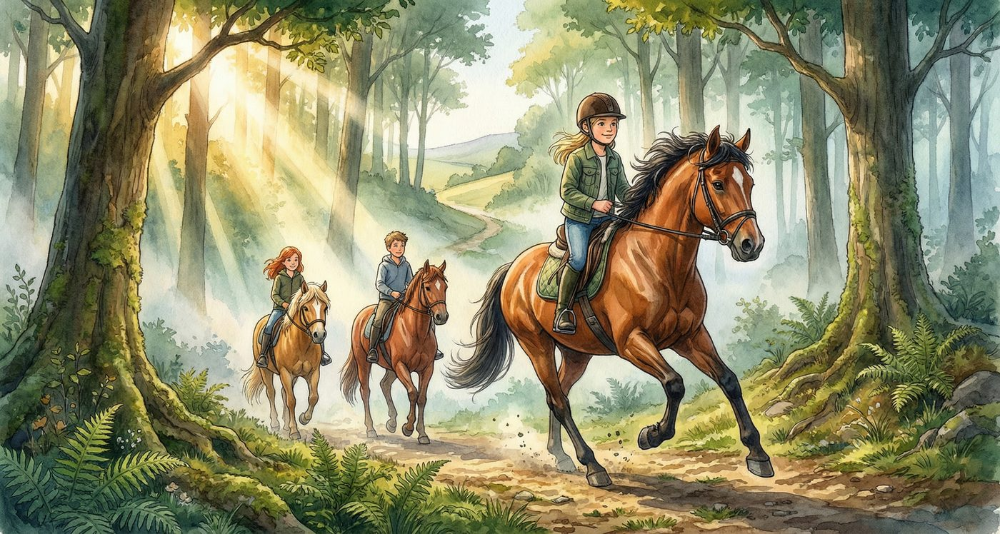
Der Morgen kam mit Nebel. Er hing uber den Koppeln wie ein weißer Schleier, und die Pferde auf der Weide sahen aus wie Geister, die durch Watte wateten.
Lena war um sechs Uhr wach. Um halb sieben hatte sie Sturmwind gesattelt. Der Braune war nervos – er tanzelte auf der Stelle und warf den Kopf. Aber als Lena ihm die Hand auf den Hals legte und leise mit ihm sprach, wurde er ruhiger.
Finn kam punktlich, auf Kupfer. Der rotbraune Wallach stand gelassen da, wie immer. Finn hatte Proviant mitgebracht: Apfel, Musliriegel und eine Flasche Wasser.
Und dann kam Mia, auf Butterblume, die gemutlich vor sich hin trottete und aussah, als wurde sie am liebsten wieder in den Stall gehen und schlafen.
„Tante Marie weiß Bescheid“, sagte Mia. „Ich hab ihr gesagt, wir reiten zur Mondkuppe. Sie hat gesagt, wir sollen vor Mittag zuruck sein.“
„Dann los“, sagte Lena.
Der Weg zur Mondkuppe fuhrte durch den Wald, vorbei am Murmelbach und dann bergauf uber einen Wiesenpfad. Normalerweise war es ein gemutlicher Ausritt von etwa einer Stunde. Aber heute war nichts normal.
Sturmwind war angespannt. Seine Ohren spielten hin und her, und sein Schritt war federnd, als konnte er jederzeit losgaloppieren. Lena hielt die Zugel kurz, aber nicht zu fest – Tante Marie hatte ihr beigebracht, dass ein Pferd, das sich eingeengt fuhlt, erst recht nervos wird.
Der Wald war still. Zu still, fand Lena. Keine Vogel, kein Rascheln. Nur das Knirschen der Hufe auf dem feuchten Boden und das leise Schnauben der Pferde.
„Ist euch aufgefallen, dass es so leise ist?“, flusterte Mia.
„Tiere sind manchmal still, wenn ein Gewitter kommt“, sagte Finn.
Lena sah zum Himmel. Zwischen den Baumkronen konnte sie dunkle Wolken sehen, die sich von Westen her aufturmten. „Wir mussen uns beeilen.“
Sie trieben die Pferde an. Butterblume protestierte kurz, aber als Kupfer und Sturmwind in einen zugigen Trab fielen, zog sie mit. Sie uberquerten den Bach – das Wasser war wieder flacher, aber Lena bemerkte, dass die Steine am Ufer nass waren, als hatte dort vor kurzem jemand gestanden.
Der Anstieg zur Mondkuppe war steiler, als Lena erwartet hatte. Der Wiesenpfad wand sich in Serpentinen den Hugel hinauf, und die Pferde schnauften von der Anstrengung. Sturmwind meisterte den Aufstieg mit kraftvollen Schritten, als ware der Hugel ein Nichts.
Und dann standen sie oben.
Die Mondkuppe war ein runder, offener Hugel mit einer flachen Kuppe, von der man in alle Richtungen sehen konnte. Im Norden lag das Dorf, im Suden der Wald, im Westen Hof Sonnenweide – von hier oben sah er klein aus, wie ein Spielzeughof – und im Osten erstreckten sich Felder bis zum Horizont.
„Wow“, sagte Mia.
Der Wind pfiff uber die Kuppe. Lenas Haare flatterten, und Sturmwinds dunkle Mahne wehte wie ein Banner.
„Also“, sagte Finn und stieg ab. „Wo fangen wir an zu suchen?“
Das Ratsel hatte gesagt: Suche dort, wo alles begann, wo der erste Stein gelegt. Lena sah sich um. Die Kuppe war mit Gras und Wildblumen bewachsen. Hier und da ragten Felsen aus dem Boden.
„August hat den Hof 1898 gegrundet“, sagte Lena. „Wenn er den ersten Stein gelegt hat, meint er vielleicht einen echten Stein. Einen Grundstein.“
„Hier oben?“, fragte Finn skeptisch. „Der Hof ist da unten.“
„Aber vielleicht hat hier oben alles angefangen. Vielleicht hat August von hier oben das Land gesehen und beschlossen, hier seinen Hof zu bauen.“
Sie suchten. Lena kroch uber die Kuppe, tastete Felsen ab, druckte gegen Steine. Finn untersuchte den Rand des Hugels. Mia kummerte sich um die Pferde und hielt Ausschau.
Und dann fand Lena etwas.
Am hochsten Punkt der Kuppe, halb verborgen unter einer Grasnarbe, war ein flacher Stein in den Boden eingelassen. Er war anders als die anderen – glatter, bearbeiteter. Und als Lena das Gras beiseitezog, sah sie eine Gravur.
A.S. – 1898 – Hier beginnt mein Traum.
„August Sonnberg“, flusterte Lena. „Das ist es.“
Aber da war mehr. Neben dem Stein, in die Erde eingelassen, war eine kleine Vertiefung. Als Lena hineingriff, spurte sie glattes Metall. Sie zog daran – und aus dem Boden kam ein kleines, rundes Metallstuck, kaum großer als eine Munze. Auf der einen Seite war ein Hufeisen eingepragt. Auf der anderen ein Pfeil, der nach unten zeigte.
„Ein Medaillon“, sagte Finn, der neben sie getreten war. „Oder ein Erkennungszeichen.“
Lena drehte es in den Fingern. Der silberne Huter, dachte sie. Mondschimmer. Irgendwie hing alles zusammen – die Spuren, das Pferd, der Grunder, das Medaillon.
Ein Donnergrollen rollte uber den Himmel. Der Wind frischte auf.
„Wir mussen runter“, sagte Mia mit großen Augen. „Sofort.“
Lena steckte das Medaillon in die Tasche. Die ersten Tropfen fielen, schwer und kalt. In Sekunden wurde aus Tropfen ein Guss. Der Regen peitschte uber die ungeschutzte Kuppe.
Sie sprangen auf die Pferde. Sturmwind tanzelte nervos, aber Lena sprach beruhigend auf ihn ein und lenkte ihn den Pfad hinunter. Kupfer folgte sicher, sein Instinkt leitete ihn auch im Regen. Butterblume machte sich mit Mia im Sattel so schnell vom Hugel, wie ihre kurzen Beine es erlaubten.
Der Abstieg war rutschig. Der Boden hatte sich in Minuten in eine Schlammrutsche verwandelt. Sturmwind glitt einmal aus, fing sich, schnaubte wutend und stapfte weiter. Lenas Herz hammerte.
„Langsam!“, rief Finn. „Wenn die Pferde zu schnell werden –“
Ein Blitz zuckte uber den Himmel, gefolgt von einem Donnerschlag, der so laut war, dass Lena zusammenzuckte. Butterblume wieherte panisch.
„Mia! Halt die Zugel fest!“
Mia klammerte sich an den Sattel. Butterblume buckelte einmal, zweimal – und dann rannte sie. Nicht den Pfad entlang, sondern querfeldein, Richtung Wald.
„MIA!“, schrie Lena.
Ohne nachzudenken druckte Lena Sturmwind die Schenkel in die Seite. Der Braune explodierte formlich nach vorne. Im Galopp jagten sie uber die nasse Wiese, Schlamm spritzte, der Regen peitschte Lena ins Gesicht. Sturmwind war schnell – schneller als Butterblume, schneller als der Wind. In Sekunden waren sie neben dem panischen Haflinger.
„MIA! ZIEH DIE ZUGEL AN! LANGSAM!“
Mia zog. Butterblume bremste, erst abrupt, dann langsamer. Sturmwind drosselte sein Tempo und stellte sich quer, sodass Butterblume nicht weiterlaufen konnte.
Die beiden Pferde standen schnaufend im Regen. Mia zitterte am ganzen Korper.
„Alles okay?“, keuchte Lena.
Mia nickte. Tranen mischten sich mit dem Regen auf ihren Wangen. „Sie ist einfach losgerannt. Ich konnte nichts machen.“
„Du hast super reagiert.“ Lena griff hinuber und nahm Mias Hand. „Du bist draufgeblieben. Das ist das Wichtigste.“
Finn kam angeritten. Kupfer stand ruhig wie immer, als ware ein Gewitter-Galopp das Normalste der Welt.
„Konnen wir jetzt bitte nach Hause?“, sagte Mia mit zitternder Stimme.
Sie ritten im Schritt zuruck zum Hof. Der Regen ließ langsam nach, und als sie durch das Tor kamen, brach die Sonne durch die Wolken, als ware nichts gewesen.
Tante Marie stand im Stalleingang, die Arme verschrankt, das Gesicht eine Mischung aus Sorge und Erleichterung.
„Alles gut“, sagte Lena, bevor ihre Tante fragen konnte. „Alles gut.“
Aber in ihrer Tasche lag das Medaillon, und in ihrem Kopf drehte sich alles um die gleiche Frage: Was ist das wahre Herz von Sonnenweide?
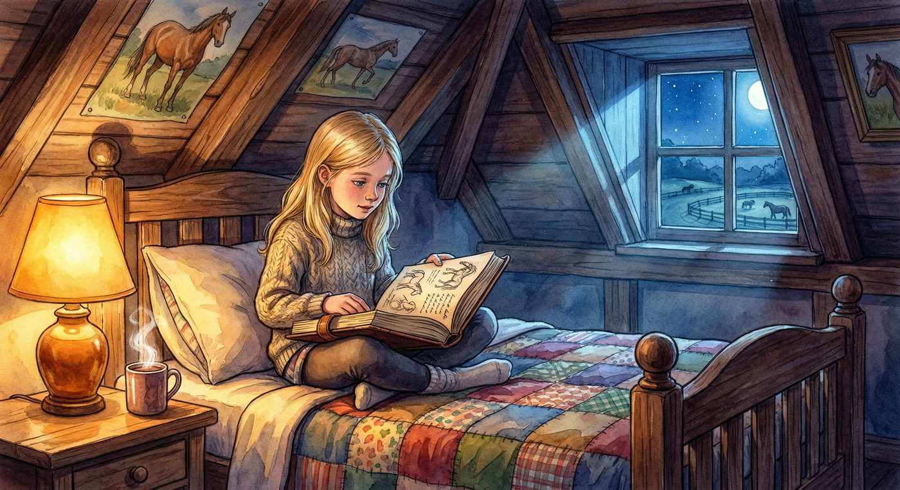
Der Regen hatte aufgehort, aber die Wolken blieben. Lena saß auf ihrem Bett und hatte Augusts Tagebuch auf den Knien. Tante Marie hatte es ihr gegeben – „Du hast es gefunden, also hast du auch das Recht, es zu lesen.“
Das Tagebuch war in braunes Leder gebunden, rissig und fleckig von der Zeit. Die Seiten waren gelblich und knisterten, wenn man sie umblätterte. August Sonnbergs Schrift war verschnorkelt und schwer zu lesen, aber Lena nahm sich Zeit.
Die ersten Eintrage waren kurz: Notizen uber den Bau des Hofs, uber die Arbeit, uber das Wetter. Aber dann anderte sich der Ton.
14. Mai 1901 – Heute ist ein silberweißes Fohlen auf der Koppel zur Welt gekommen. Die Stute hat es in der Nacht bekommen, ganz allein. Als ich am Morgen in den Stall kam, stand es schon auf seinen Beinen. Es ist das schonste Fohlen, das ich je gesehen habe. Sein Fell schimmert wie Mondlicht auf Wasser. Ich nenne es Mondschimmer.
Lena stutzte. 1901. Das war vor uber 120 Jahren.
Kein Pferd wird so alt, dachte sie. Aber sie las weiter.
3. September 1901 – Mondschimmer wachst schneller als jedes Fohlen, das ich kenne. Er ist klug, ruhig und scheint alles zu verstehen, was ich sage. Manchmal habe ich das Gefuhl, er sieht Dinge, die ich nicht sehen kann.
12. Dezember 1905 – Heute ist etwas Seltsames geschehen. Mondschimmer stand nachts auf der Koppel, und uberall, wo er ging, hinterließen seine Hufe silberne Spuren. Ich bin kein aberglaubischer Mann, aber ich kann nicht leugnen, was ich gesehen habe. Dieser Hof hat ein Herz, und Mondschimmer ist sein Huter.
Lena blatterte weiter. Die Eintrage wurden personlicher, tiefgrundiger.
8. April 1910 – Brinkmann hat wieder nach dem Land am Bach gefragt. Ich habe nein gesagt. Sonnenweide gehort als Ganzes zusammen. Man kann einem Hof nicht das Herz herausschneiden und erwarten, dass er weiterlebt. Brinkmann versteht das nicht. Sein Junge auch nicht. Diese Familie sieht nur Land, wo ich ein Zuhause sehe.
Lena sog scharf die Luft ein. Brinkmann. Die Familie Brinkmann wollte schon vor uber hundert Jahren das Land.
22. August 1921 – Ich bin alt geworden. Meine Hande zittern, wenn ich schreibe. Aber Mondschimmer steht noch immer auf der Koppel, silbern und still, als hatte die Zeit ihn vergessen. Ich habe das Wichtigste gut versteckt. Die Urkunden in der Scheune, den Hinweis unter der Eiche, und das wahre Herz – das bewahrt Mondschimmer. Er weiß, wann die Zeit gekommen ist. Er wird den Richtigen finden. Das war mein letzter Eintrag.
Das Tagebuch endete hier.
Lena klappte es langsam zu. Ihr Kopf war voller Gedanken, die sich wie ein Puzzle zusammensetzten.
Mondschimmer war mehr als ein altes Pferd. Er war ein Huter. Ein Beschutzer. Er hatte die silbernen Spuren gelegt, damit sie – Lena – die Truhe fand. Und laut August bewahrte Mondschimmer das wahre Herz des Hofs.
Aber was war das?
Am nachsten Morgen rannte Lena zum Stall. Mondschimmer stand in seiner Box und sah sie mit seinen tiefen, dunklen Augen an.
„Du weißt es, oder?“, flusterte Lena. „Du weißt, wo das wahre Herz ist.“
Mondschimmer stupste sie sanft mit der Nase. Und Lena hatte das Gefuhl – vielleicht verruckt, vielleicht nicht –, dass er lachelte.
Sie suchte Finn. Er saß auf dem Zaun und kaute auf einem Grashalm.
„Ich hab Augusts Tagebuch gelesen“, sagte Lena und erzahlte ihm alles. Finn horte zu, ohne sie zu unterbrechen. Als sie fertig war, pfiff er leise.
„Also ist Mondschimmer irgendwie … magisch?“
„Ich weiß nicht, ob magisch das richtige Wort ist. Aber er ist besonders. August hat geschrieben, Mondschimmer bewahrt das wahre Herz. Und das Ratsel sagt, es zeigt sich, wenn der silberne Huter seine letzte Runde dreht.“
„Seine letzte Runde.“ Finn wurde blass. „Das klingt, als ob …“
„Ja.“ Lena schluckte. „Ich glaube, Mondschimmer ist alt. Wirklich alt. Und vielleicht hat er nicht mehr viel Zeit.“
Sie sahen beide zum Stall. Mondschimmer stand in seiner Box, silbern und still, und die Sonne malte Schatten auf sein Fell.
„Was machen wir?“, fragte Finn.
„Wir warten. Wir beobachten. Und wenn Mondschimmer uns wieder zeigt, wohin wir gehen sollen – dann folgen wir ihm.“
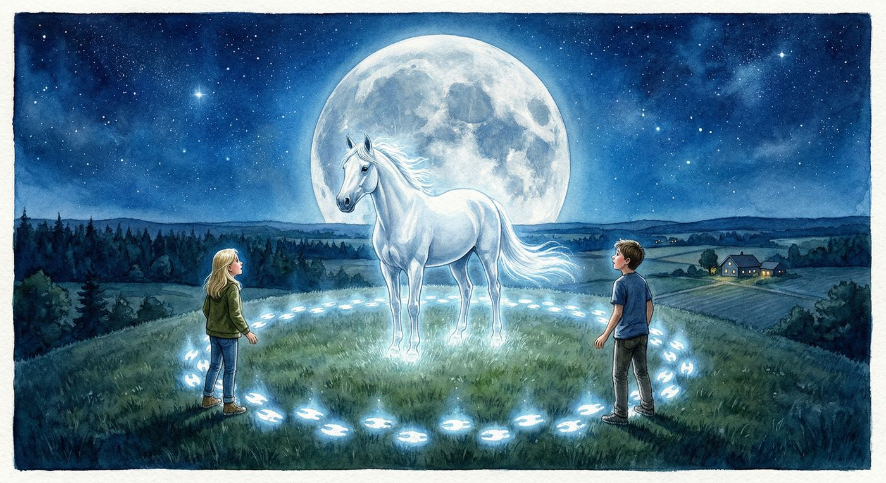
Es geschah drei Tage spater.
Lena hatte die Tage damit verbracht, das Medaillon zu untersuchen, das Tagebuch noch einmal zu lesen und auf Sturmwind zu reiten. Die Sonne war zuruckgekehrt, der Sommer lag warm und golden uber Sonnenweide, und alles wirkte friedlich.
Aber Lena beobachtete Mondschimmer. Jeden Morgen, jeden Abend. Und sie bemerkte etwas, das ihr einen Stich im Herzen gab: Das silberne Pferd war muder geworden. Es stand langer still, fraß weniger, und manchmal, wenn Lena ihn ansah, glaubte sie, ein Flackern in seinen Augen zu sehen. Wie eine Kerze, die im Wind tanzt.
Tante Marie bemerkte es auch. „Mondschimmer wird alt“, sagte sie leise, als sie abends zusammen den Stall absperrten. „Wirklich alt. Ich glaube … ich glaube, er bereitet sich vor.“
„Worauf?“
Tante Marie antwortete nicht. Aber ihre Augen glanzten feucht.
In der Nacht des dritten Tages wachte Lena auf. Draußen war es hell – der Mond stand voll und rund am Himmel, so groß und nah, als konnte man ihn beruhren. Und durch das Dachfenster sah Lena, was sie erwartet hatte.
Mondschimmer. Er stand auf der Koppel, silbern leuchtend, den Kopf zum Mond erhoben. Und dann begann er zu gehen. Nicht zum Stall. Nicht zum Zaun. Er ging langsam, feierlich, Richtung Mondkuppe.
Lena zog sich an. Dieses Mal zogerte sie nicht. An der Treppe wartete – Finn.
„Ich konnte nicht schlafen“, flusterte er. „Hab ihn durchs Fenster gesehen.“
„Du schlafst hier?“
„Dachte, so was passiert. Hab mich im Heulager versteckt.“ Er grinste, aber seine Augen waren ernst.
Sie gingen hinaus. Die Nacht war warm und still, der Boden trocken unter ihren Fußen. Mondschimmers silbrige Gestalt bewegte sich langsam vor ihnen her, am Wald vorbei, den Wiesenpfad hinauf.
Die Mondkuppe war in silbernes Licht getaucht. Jeder Grashalm, jeder Stein schimmerte. Es sah aus wie eine andere Welt – nicht unheimlich, sondern feierlich. Wie eine Kirche aus Licht.
Mondschimmer stand oben auf der Kuppe. Genau auf dem Stein, den Lena gefunden hatte – dem Grundstein mit Augusts Gravur. Das Pferd stand dort, den Kopf erhoben, und sein Fell leuchtete so hell, dass Lena die Augen zusammenkneifen musste.
Und dann sah sie die Hufspuren. Silberne Hufspuren, die in einem Kreis um den Grundstein verliefen. Mondschimmer ging im Kreis. Langsam. Schritt fur Schritt. Seine Hufe hinterließen leuchtende Abdrucke auf dem Boden, und mit jeder Runde wurde der Kreis heller.
Seine letzte Runde, dachte Lena. Ihr Herz tat weh.
Mondschimmer blieb stehen. Er sah Lena an. Und dann senkte er den Kopf und stupste mit der Nase gegen den Grundstein. Einmal. Zweimal. Dreimal.
Lena verstand. Sie kniete sich hin, schob den Grundstein zur Seite – er war schwer, aber er bewegte sich – und darunter war ein Hohlraum. Und in diesem Hohlraum, eingebettet in trockene Erde, lag etwas.
Ein kleiner Lederbeutel. Und darin – eine Kette. Eine feine Silberkette mit einem Anhanger in Form eines Hufeisens, in dessen Mitte ein kleiner, milchig-weißer Stein saß, der im Mondlicht schimmerte.
„Das ist es“, flusterte Lena. „Das wahre Herz von Sonnenweide.“
Sie stand auf und hielt die Kette ins Mondlicht. Der Stein leuchtete – nicht stark, nicht grell, aber warm und stetig, wie ein kleines Herz, das schlug.
Mondschimmer trat neben sie. Sein Atem war warm auf ihrer Haut. Und als Lena ihm in die Augen sah, sah sie etwas, das sie nie vergessen wurde: Dankbarkeit. Tiefe, stille Dankbarkeit.
Du hast auf mich gewartet, dachte sie. All die Jahre.
Sie standen dort, Lena, Finn und Mondschimmer, auf der Mondkuppe im Licht des Vollmonds. Der Wind strich durch das Gras. Irgendwo rief ein Kauzchen. Und fur einen Moment war die Welt vollkommen still und vollkommen schon.
Dann sagte Finn leise: „Lena. Hor mal.“
Von unten, vom Hof, trug der Wind Stimmen herauf. Und das Gerausch eines Motors.
Lena spahte den Hugel hinunter. Am Rand der Mondkuppe, wo der Wiesenpfad begann, stand ein Gelandewagen. Und daneben, im Mondlicht, die Gestalt eines Mannes.
Herr Brinkmann.
Er kam den Hugel herauf.
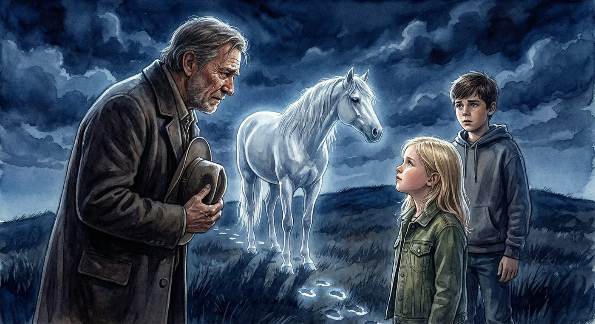
Lena stellte sich vor Mondschimmer. Ihr Herz hammerte, aber ihre Stimme war fest.
„Was wollen Sie hier?“
Herr Brinkmann blieb ein paar Schritte entfernt stehen. Im Mondlicht sah sein Gesicht anders aus als am Tag – weicher, verletzlicher. Der steinerne Ausdruck war weg. Stattdessen sah Lena Mudigkeit. Tiefe, alte Mudigkeit.
„Ich habe euch beobachtet“, sagte er. Seine Stimme war rau, aber nicht aggressiv. „Seit Tagen. Die Spur, den Stein, die Scheune. Ich wusste, dass es so weit kommen wurde.“
„Woher wissen Sie davon?“, fragte Finn.
Herr Brinkmann sah zu Mondschimmer. Etwas Seltsames geschah mit seinem Gesicht. Seine Lippen zitterten.
„Weil mein Großvater mir davon erzahlt hat“, sagte er leise. „Er und August Sonnberg waren … Freunde. Bevor alles schiefging. Bevor der Streit um das Land begann.“
Herr Brinkmann setzte sich auf einen Stein. Er nahm seinen Hut ab und drehte ihn in den Handen.
„Mein Großvater hieß Wilhelm Brinkmann. Er und August haben zusammen dieses Land hier oben entdeckt. Sie standen genau hier, auf dieser Kuppe, und haben uber die Wiesen geschaut und gesagt: Hier bauen wir unsere Hofe. Hier werden wir glucklich.“
Er machte eine Pause. Mondschimmer stand still und sah ihn an.
„August baute Sonnenweide. Mein Großvater baute den Brinkmann-Hof, gleich nebenan. Jahrelang halfen sie einander. Jahrelang waren sie wie Bruder. Aber dann …“ Er seufzte. „Dann kam der Streit. Mein Großvater brauchte Geld. Er wollte das Bachland kaufen, das zwischen den Hofen lag. August sagte nein. Es gehore zu Sonnenweide. Mein Großvater wurde wutend. Die Freundschaft zerbrach.“
„Und seitdem streiten sich die Familien“, sagte Lena.
„Seitdem streiten sich die Familien.“ Herr Brinkmann nickte. „Mein Vater hat gestritten. Ich habe gestritten. Immer das gleiche Land, immer der gleiche Arger.“ Er sah auf seine Hande. „Aber wissen Sie, was das Schlimmste ist? Mein Großvater hat auf dem Sterbebett gesagt, er bereut den Streit. Er hat gesagt, er wunschte, er hatte nie danach gefragt. Aber da war es zu spat.“
Stille.
Lena sah Herrn Brinkmann an. Sie sah keinen Bosewicht. Sie sah einen alten Mann, der etwas weitertrug, das schon vor seiner Zeit angefangen hatte. Einen alten Schmerz, der von Generation zu Generation weitergegeben wurde wie ein Stein, den niemand ablegen wollte.
„Warum sind Sie heute Nacht hier?“, fragte sie.
Herr Brinkmann sah zu Mondschimmer. „Weil ich ihn sehen wollte. Dieses Pferd. Mein Großvater hat von ihm erzahlt. Er hat gesagt, auf Sonnenweide gibt es ein silbernes Pferd, das den Hof beschutzt. Als Kind dachte ich, das ware ein Marchen. Aber dann sah ich die Spuren. Und ich wusste, es ist wahr.“
Er stand auf und machte einen Schritt auf Mondschimmer zu. Das Pferd ruhrte sich nicht. Herr Brinkmann streckte langsam die Hand aus – und Mondschimmer ließ es zu. Er ließ den alten Mann seine Nase beruhren.
„Ich werde die Klage zuruckziehen“, sagte Herr Brinkmann leise. „Das Land gehort zu Sonnenweide. Es hat immer zu Sonnenweide gehort. Mein Großvater wusste das. Mein Vater wusste das. Und ich weiß es auch.“
Lena spurte, wie etwas in ihrer Brust warm wurde. Nicht Triumph. Etwas Besseres. Erleichterung. Und Mitgefuhl.
„Herr Brinkmann?“ Sie trat neben ihn. „August und Ihr Großvater waren Freunde. Vielleicht … vielleicht kann das wieder so sein. Nicht die beiden, aber … wir. Unsere Familien.“
Herr Brinkmann sah sie an. Und dann passierte etwas, das Lena nicht fur moglich gehalten hatte: Er lachelte. Es war ein kleines, rostiges Lacheln, als hatte er es lange nicht benutzt. Aber es war echt.
„Du bist ein kluges Madchen, Lena“, sagte er. „Kluger als wir alle.“
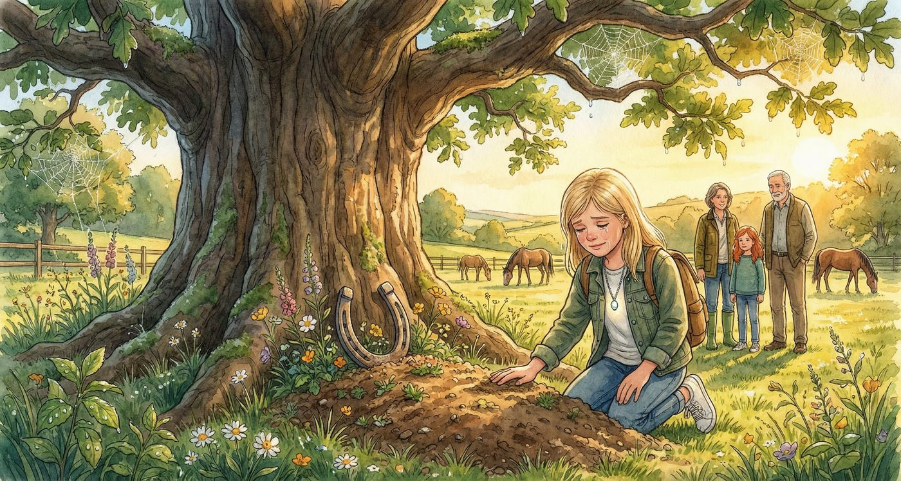
Am nachsten Morgen erzahlte Lena Tante Marie alles. Von der Nacht auf der Mondkuppe, vom Medaillon, von der Kette, von Herrn Brinkmann.
Tante Marie horte zu, ohne zu unterbrechen. Als Lena fertig war, nahm ihre Tante sie in den Arm und hielt sie lange fest.
„Mein kluges, mutiges Madchen“, flusterte sie. „Du hast geschafft, woran wir alle gescheitert sind. Nicht nur das Ratsel. Du hast einen alten Streit beendet.“
Am Vormittag kam Herr Brinkmann zum Hof. Diesmal klopfte er nicht laut an die Tur. Er stand am Tor, den Hut in der Hand, und wartete.
Tante Marie ging zu ihm. Sie sprachen lange. Leise, ernst, aber ohne Arger. Lena, Mia und Finn saßen auf dem Zaun und beobachteten sie.
„Glaubst du, die werden Freunde?“, fragte Mia.
„Vielleicht nicht Freunde“, sagte Lena. „Aber Nachbarn. Echte Nachbarn.“
Am Nachmittag machte Tante Marie ein Fest. Kein großes Fest – aber Kuchen, Limonade, Wurstchen vom Grill, und die Pferde bekamen extra Apfel und Mohren. Mia und Lena flochten Butterblumes Mahne. Finn versuchte, Flecki beizubringen, auf Kommando zu kommen. Flecki fand das mittelinteressant.
Und Herr Brinkmann – Heinrich, wie Tante Marie ihn jetzt nannte – saß auf einer Bank und erzahlte Geschichten von seinem Großvater und August. Wie sie zusammen den ersten Zaun gebaut hatten. Wie sie einmal ein Fohlen aus einem zugefrorenen Bach gerettet hatten. Wie sie abends am Feuer gesessen und uber die Zukunft gesprochen hatten.
„Die beiden hatten sich gefreut“, sagte er und sah uber den Hof. „Uber das hier.“
Lena trug die silberne Kette um den Hals. Der milchig-weiße Stein lag warm auf ihrer Brust. Tante Marie hatte gesagt, sie solle sie behalten – „Du bist die Huterin jetzt. Du hast Mondschimmers Vertrauen.“
Am Abend, als die Sonne unterging und der Himmel in Orange und Rosa leuchtete, ging Lena zu Mondschimmers Box.
Das silberne Pferd stand ruhig da. Aber etwas war anders. Sein Fell leuchtete nicht mehr so stark. Es schimmerte noch, aber sanfter, leiser, wie das letzte Gluhen einer Kerze.
„Danke“, flusterte Lena. Sie legte die Stirn gegen seinen Hals und spurte seinen langsamen, ruhigen Herzschlag. „Danke, dass du auf mich gewartet hast.“
Mondschimmer schnaubte leise. Er legte seinen Kopf uber Lenas Schulter und hielt sie fest, auf seine eigene, pferdige Art.
Und Lena weinte. Nicht vor Trauer. Vor so vielen Gefuhlen auf einmal, dass sie keinen Namen dafur hatte. Gluck und Traurigkeit und Dankbarkeit und Stolz und etwas Großes, Warmes, das sich anfuhlte wie nach Hause kommen.
In dieser Nacht schlief Mondschimmer ein. Friedlich, still, in seiner Box. Tante Marie fand ihn am nachsten Morgen, liegend im Stroh, das Fell immer noch silbrig schimmernd, als ware er nur aus Mondlicht gemacht.
Die Pferde auf dem Hof wieherten leise. Sturmwind stampfte unruhig. Sternchen druckte sich an die Boxenwand. Butterblume stand still und ließ den Kopf hangen.
Lena weinte wieder. Tante Marie hielt sie fest.
„Er hat gewusst, dass es Zeit war“, sagte Tante Marie. „Er hat gewartet, bis der Hof sicher ist. Bis jemand kommt, der das Herz weitertragt. Das warst du, Lena.“
Sie begruben Mondschimmer unter der alten Eiche. Es war ein warmer Tag, und die Vogel sangen, und Finn sagte nichts, aber seine Augen waren rot, und selbst Herr Brinkmann stand still dabei und nahm seinen Hut ab.
Lena legte eine Hand auf die frische Erde. „Schlaf gut, Mondschimmer“, flusterte sie. „Ich pass auf den Hof auf. Versprochen.“
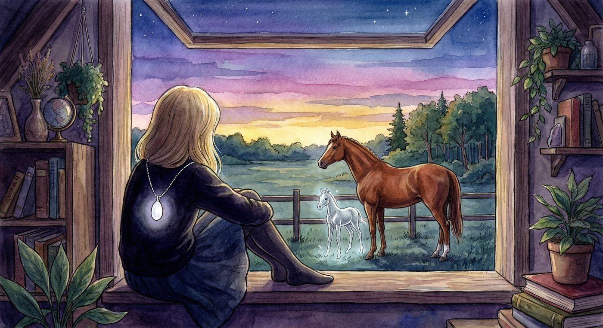
Eine Woche verging. Dann zwei. Lenas Ferien auf Hof Sonnenweide naherten sich dem Ende, und jeder Tag war kostbar.
Sie ritt jeden Morgen auf Sturmwind aus. Der große Braune hatte sich verandert – er war ruhiger, sanfter, als hatte Mondschimmers Abschied etwas in ihm gelost. Er trug Lena sicher uber die Waldpfade, durch den Bach und uber die Wiesen. Wenn Lena die Augen schloss und den Wind auf ihrem Gesicht spurte, fuhlte sie sich frei.
Finn kam jeden Tag vorbei. Er half im Stall, reparierte Zaune und brachte Flecki bei, auf Zuruf stehen zu bleiben. Flecki machte Fortschritte – manchmal blieb er sogar stehen, wenn Finn es nicht sagte.
Mia und Lena verbrachten die Nachmittage auf der Koppel oder am Bach. Sie bauten einen kleinen Staudamm aus Steinen, der naturlich nicht hielt. Sie pfluckten Wildblumen und flochten Kranze fur die Pferde. Sie lagen im Gras und schauten in den Himmel und redeten uber alles und nichts.
Herr Brinkmann – Heinrich – kam regelmaßig vorbei. Er brachte Apfel aus seinem Garten mit und half Tante Marie beim Reparieren des Scheunendachs. Die alte Scheune, Augusts Versteck, wurde langsam wieder hergerichtet. Heinrich kannte sich mit Holz aus, und bald sah die Scheune besser aus als seit Jahrzehnten.
„Mein Großvater hat August beim Bau dieser Scheune geholfen“, sagte Heinrich, als er einen Balken festschraubte. „Es fuhlt sich richtig an, sie wieder aufzubauen.“
An Lenas letztem Abend gab es ein Abschiedsessen in der großen Kuche. Tante Marie hatte Lenas Lieblingsessen gemacht – Kartoffelpuffer mit Apfelmus – und alle waren da: Mia, Finn, Heinrich, und naturlich die Pferde, die draußen vor dem Fenster Kopf an Kopf standen, als wollten sie mithoren.
„Ich will nicht fahren“, sagte Lena.
„Du kommst wieder“, sagte Tante Marie. „In den Herbstferien. Und im nachsten Sommer. Sonnenweide ist dein Zuhause, Lena. Das weißt du.“
Lena nickte. Sie fasste an die silberne Kette um ihren Hals. Der Stein war warm, immer warm, als hatte er ein eigenes kleines Herz.
Nach dem Essen ging Lena noch einmal in den Stall. Sie besuchte jedes Pferd. Butterblume bekam ein Stuck Karotte. Nordlicht ließ sich gnadigerweise am Hals kraulen. Flecki versuchte, Lenas Schuh zu klauen. Kupfer sah sie mit seinen klugen Augen an und schnaubte leise. Sternchen druckte schuchtern die Nase gegen Lenas Hand.
Und Sturmwind – Sturmwind legte seinen großen braunen Kopf auf Lenas Schulter und atmete warm in ihr Haar.
„Ich komm wieder“, flusterte Lena. „Versprochen.“
Mondschimmers Box war leer. Aber wenn das Licht richtig fiel, glaubte Lena manchmal, einen silbrigen Schimmer an der Wand zu sehen. Als ware er nie ganz gegangen.
An diesem letzten Abend stand Lena noch lange am Fenster ihres Dachzimmers und sah hinaus. Der Mond war fast voll. Die Koppel lag silbern da. Und ganz am Rand, wo der Hof an den Wald grenzte, sah sie – nur fur einen Moment, nur aus dem Augenwinkel – einen silbrigen Schimmer.
Vielleicht war es Mondlicht auf dem nassen Gras. Vielleicht eine Spiegelung.
Oder vielleicht war es Mondschimmer, der seine Runden drehte. Der Huter von Sonnenweide, der nie wirklich gegangen war.
Lena lachelte.
Bis bald, dachte sie.
Und als sie sich ins Bett legte, die silberne Kette auf ihrer Brust, fiel ihr Blick auf Sturmwinds Koppel. Der große Braune stand am Zaun und sah zum Wald. Neben ihm – und da war Lena sich sicher – neben ihm stand ein kleines Pferd.
Winzig. Silberweiß. Mit einem Fell, das im Mondlicht schimmerte.
Ein Fohlen.
Lena setzte sich auf. Ihr Herz schlug schnell. Sie druckte das Gesicht an die Scheibe, aber das Fohlen war weg. Sturmwind stand allein am Zaun.
Hatte sie getraumt?
Lena fasste an die Kette. Der Stein war warm. Warmer als sonst.
Nein. Sie hatte nicht getraumt.
Das Abenteuer war nicht zu Ende. Es hatte gerade erst begonnen.
Ende von Band 1
Lena und das Geheimnis der silbernen Hufspur
Band 1 der Sonnenweide-Abenteuer
Eine Geschichte fur junge Pferdefreundinnen
und alle, die an Abenteuer glauben.
Alle Rechte vorbehalten.
Gestaltung und Illustrationen: Handgefertigt mit Liebe
Schrift: Playfair Display & Lora
Papier: Naturweiß, 100g/m²
Gedruckt auf nachhaltig produziertem Papier.
♢